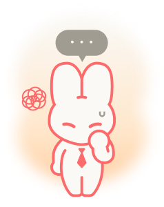

방금 질문, 무슨 말씀이셨죠...?
“ 순간 멘붕러형 ”
돌발 상황에서
침묵 or 실수
침묵 or 실수
질문의
맥락을 놓침
맥락을 놓침
말머리를
못 잡음
못 잡음
당신은 예상하지 못한 질문이나 낯선 표현 앞에서
말문이 막히는 경향이 있습니다.
준비한 질문에는 비교적 잘 대답하지만,
예상치 못한 돌발 질문이나 답변 도중 흐름이 끊기는
상황에서는 당황하는 모습이 드러날 수 있어요.
면접관은 당신이 긴장에 약하고,
낯선 상황에 대처하는 능력이 부족하다는
인상을 받을 수 있습니다.
이러한 모습이 반복되면 신뢰감이 떨어질 수 있어요.
순간 멘붕러형을 위한
업비트 면접 TIP!
"준비된 말보다,
회복력 있는 태도가 더 신뢰를 줍니다."
즉흥적으로도 말하는 훈련이 필요합니다.
질문을 받았을 때 바로 말하지 않고
좋은 질문이네요,
제가 해봤던 일이 하나 떠오릅니다
같은 '시간 버는 문장'을 익히세요.